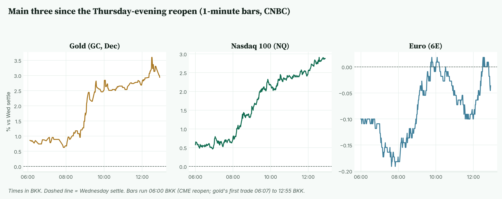
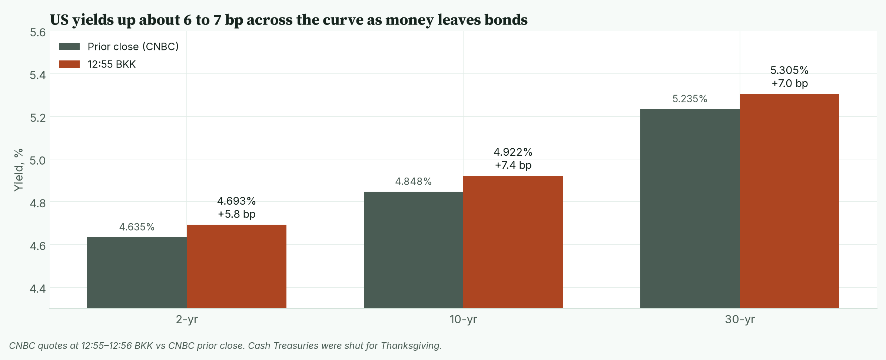
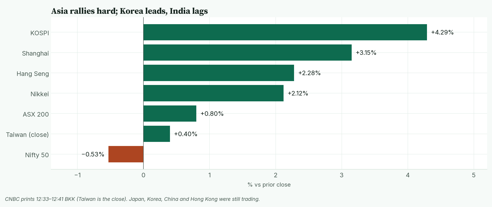
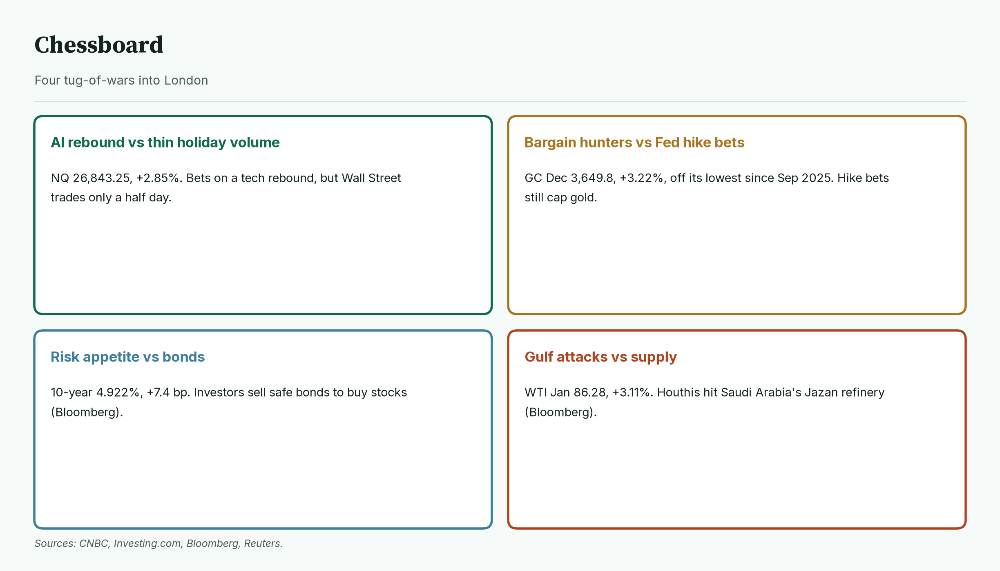
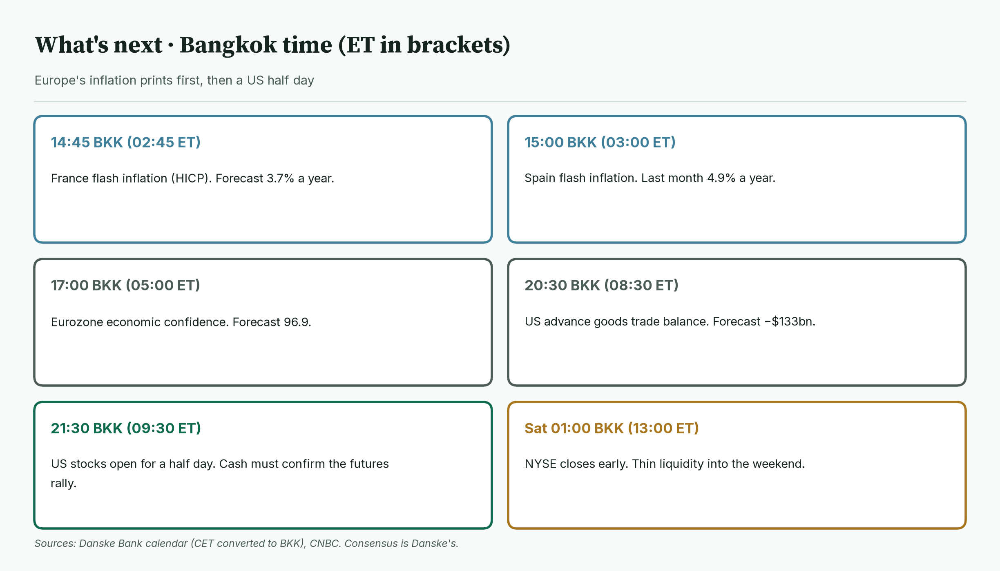
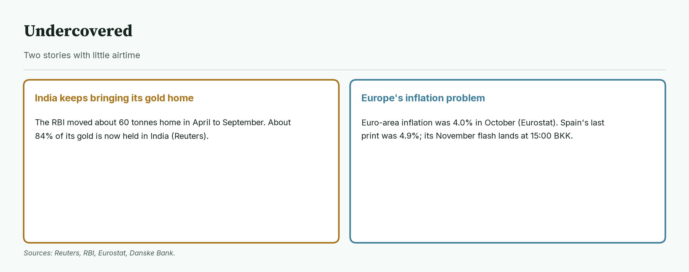
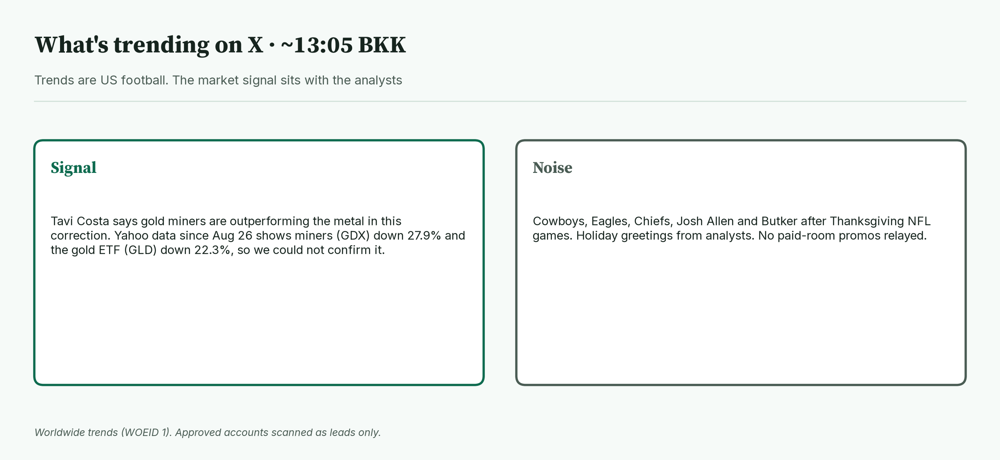

April · Market Intel, pre-London · Fri Nov 27, 2026 · ~13:10 BKK / ~06:10 London
Headline: Risk is back after Thanksgiving. Nasdaq futures are 26,843.25 (+2.85%) and gold futures jumped to 3,649.8 (+3.22%). Euro futures are flat at 1.0990 (+0.00%). France's flash inflation at 14:45 BKK and the US half-day open at 21:30 BKK decide the session.
So what: this is a holiday-thin rebound, not proof the AI sell-off is over. Bonds sold off as stocks rallied, so rates are still the tripwire.
Lean edition: half length to save usage. All levels, moves and quote times are checked.
1) Top signals
 Caption: Futures at 12:45–12:46 BKK versus Wednesday's settle. Gold and Nasdaq both jump about 3%; the euro is flat.
Caption: Futures at 12:45–12:46 BKK versus Wednesday's settle. Gold and Nasdaq both jump about 3%; the euro is flat.
- Nasdaq futures +2.85%, S&P futures +1.79% on bets that battered tech can rebound (Investing.com).
- Gold futures +3.22%, silver +9.18% off gold's lowest since September 2025 (CNBC).
- KOSPI +4.29%, Shanghai +3.15% as Asia rallies (CNBC).
2) Main instruments The three main contracts since the Thursday-evening reopen, as a % move from Wednesday's settle. Gold and Nasdaq climbed all morning; the euro went nowhere. |
 Caption: The three main contracts since the Thursday-evening reopen, as a % move from Wednesday's settle. Gold and Nasdaq climbed all morning; the euro went nowhere.
(Quotes are CNBC futures at 12:45–12:46 BKK (05:45 London). CME reopened at 06:00 BKK (18:00 New York Thursday). There was no settle on Thanksgiving, so % moves are against Wednesday's settle. Ranges use CNBC 1-minute bars since 06:00 BKK, because Yahoo's 1-minute feed returned no bars today. Backup source in use.)
Caption: The three main contracts since the Thursday-evening reopen, as a % move from Wednesday's settle. Gold and Nasdaq climbed all morning; the euro went nowhere.
(Quotes are CNBC futures at 12:45–12:46 BKK (05:45 London). CME reopened at 06:00 BKK (18:00 New York Thursday). There was no settle on Thanksgiving, so % moves are against Wednesday's settle. Ranges use CNBC 1-minute bars since 06:00 BKK, because Yahoo's 1-minute feed returned no bars today. Backup source in use.)
- Gold futures (GC, Dec): 3,649.8, +3.22%, at 12:45 BKK. Driver: bargain hunters returned after gold hit its lowest since September 2025 on Wednesday, and the US holiday paused the selling (CNBC). Wednesday's settle was 3,535.8. The range since 06:07 BKK (Dec's first trade) is 3,558.0 (07:52 BKK) to 3,663.9 (12:30 BKK). It sits near the high. The more active February contract is 3,676.8, +3.15% (Yahoo).
- Nasdaq 100 futures (NQ, Dec): 26,843.25, +2.85%, at 12:46 BKK. Driver: growing bets on a rebound in tech and AI shares after weeks of losses, in holiday-thin trade (Investing.com). Wednesday's settle was 26,100.25. The range since 06:00 BKK is 26,219.00 (06:55 BKK) to 26,865.75 (12:36 BKK). It sits at the high.
- Euro futures (6E, Dec): 1.0990, +0.00%, at 12:46 BKK. Driver: the dollar is flat, so the euro waits for France and Spain's inflation data (CNBC). Wednesday's settle was 1.0989. The range since 06:00 BKK is 1.0968 (07:38 BKK) to 1.0994 (12:32 BKK). It sits near the top.
3) Context: dollar, rates, fear, oil, S&P, Bitcoin Yields rose about 6 to 7 bp across the curve. Money is leaving the safety of bonds as stocks bounce. |
 Caption: Yields rose about 6 to 7 bp across the curve. Money is leaving the safety of bonds as stocks bounce.
Context. The dollar index (DXY, the dollar against six major currencies) is 103.704, +0.04% (CNBC, 12:56 BKK). The 10-year US yield (what the US government pays to borrow for 10 years) is 4.922%, up 7.4 basis points versus CNBC's prior close of 4.848% (CNBC, 12:55 BKK; a basis point is 0.01 percentage point). Bloomberg measured the 10-year up 5 bp in early Asia. The VIX (the "fear gauge" built from S&P 500 option prices) is 26.80, −5.27% at its last print (CNBC, indicative; cash US markets were shut Thursday). US oil (CL, January) is 86.28, +3.11% (CNBC, 12:46 BKK), after Houthi militants hit Saudi Arabia's Jazan refinery (Bloomberg). S&P 500 futures (ES) are 7,324.50, +1.79% (CNBC, 12:46 BKK), ranging 7,236.50 to 7,334.00 since 06:00 BKK. Bitcoin is $61,625, +1.56% versus CNBC's previous close (CNBC/Coin Metrics, 12:56 BKK).
Caption: Yields rose about 6 to 7 bp across the curve. Money is leaving the safety of bonds as stocks bounce.
Context. The dollar index (DXY, the dollar against six major currencies) is 103.704, +0.04% (CNBC, 12:56 BKK). The 10-year US yield (what the US government pays to borrow for 10 years) is 4.922%, up 7.4 basis points versus CNBC's prior close of 4.848% (CNBC, 12:55 BKK; a basis point is 0.01 percentage point). Bloomberg measured the 10-year up 5 bp in early Asia. The VIX (the "fear gauge" built from S&P 500 option prices) is 26.80, −5.27% at its last print (CNBC, indicative; cash US markets were shut Thursday). US oil (CL, January) is 86.28, +3.11% (CNBC, 12:46 BKK), after Houthi militants hit Saudi Arabia's Jazan refinery (Bloomberg). S&P 500 futures (ES) are 7,324.50, +1.79% (CNBC, 12:46 BKK), ranging 7,236.50 to 7,334.00 since 06:00 BKK. Bitcoin is $61,625, +1.56% versus CNBC's previous close (CNBC/Coin Metrics, 12:56 BKK).
4) Asia Korea led a broad rally while India slipped. Taiwan is the close; the rest are CNBC prints from 12:36 to 12:41 BKK. |
 Caption: Korea led a broad rally while India slipped. Taiwan is the close; the rest are CNBC prints from 12:36 to 12:41 BKK.
Caption: Korea led a broad rally while India slipped. Taiwan is the close; the rest are CNBC prints from 12:36 to 12:41 BKK.
- KOSPI +4.29% (CNBC, 12:36 BKK).
- Shanghai +3.15%, Hang Seng +2.28%, Nikkei +2.12% (CNBC, 12:41 BKK).
- Taiwan closed +0.40%; Nifty −0.53% (CNBC).
5) Chessboard Four tug-of-wars into London. Rates and the AI rebound move the main three fastest. |
 Caption: Four tug-of-wars into London. Rates and the AI rebound move the main three fastest.
Caption: Four tug-of-wars into London. Rates and the AI rebound move the main three fastest.
- Fed hike bets still cap gold after hot US inflation data this week (CNBC).
- Houthis struck Saudi Arabia's Jazan refinery, after targeting Ras Tanura earlier this week. Brent (January) is 97.46, +0.92% (Bloomberg, CNBC).
- USD/JPY is 159.31 at 12:56 BKK, still near 160 (CNBC).
6) Leading indicators (BKK) Europe's inflation prints first, then a US half day. NYSE closes at 01:00 BKK Saturday. |
 Caption: Europe's inflation prints first, then a US half day. NYSE closes at 01:00 BKK Saturday.
Caption: Europe's inflation prints first, then a US half day. NYSE closes at 01:00 BKK Saturday.
- 14:45 BKK: France flash inflation (a first estimate of consumer prices; 2:45 AM ET). Forecast 3.7% a year (Danske Bank). The euro decider.
- 15:00 BKK: Spain flash inflation (3:00 AM ET). Last month 4.9% (Danske Bank).
- 21:30 BKK: US stocks open (9:30 AM ET) for a half day, closing 01:00 BKK Saturday (1:00 PM ET). Cash must confirm the futures rally (CNBC).
- Watch levels: GC 3,558.0 / 3,663.9 · NQ 26,219.00 / 26,865.75 · 6E 1.0968 / 1.0994.
7) Undercovered Two stories with little airtime. They touch central-bank gold and Europe's inflation. |
 Caption: Two stories with little airtime. They touch central-bank gold and Europe's inflation.
Caption: Two stories with little airtime. They touch central-bank gold and Europe's inflation.
- India's central bank moved about 60 tonnes of gold home from April to September; about 84% is now held in India (Reuters, RBI).
- Euro-area inflation was 4.0% in October (Eurostat). That makes today's France and Spain flashes matter more than usual.
8) X pulse Trends are US football after Thanksgiving. The market signal sits with the analysts. |
 Caption: Trends are US football after Thanksgiving. The market signal sits with the analysts.
Caption: Trends are US football after Thanksgiving. The market signal sits with the analysts.
- Signal: Tavi Costa says gold miners are outperforming the metal in this correction. Yahoo data since Aug 26 shows miners (GDX) −27.9% versus the gold ETF (GLD) −22.3%, so we could not confirm it. Treat analyst posts as leads only.
- Fluff: Cowboys, Eagles and Chiefs trend worldwide. Virality is not importance.
Confidence: Futures levels: high (CNBC, Yahoo cross-check). Session ranges: CNBC 1-minute bars since 06:00 BKK (Yahoo 1-minute feed empty; backup used). DXY, yields, VIX, oil, yen, Bitcoin and Asia: CNBC, time-stamped. Rebound drivers: CNBC, Investing.com. Refinery attack and bond move: Bloomberg. RBI gold: Reuters. Euro inflation: Eurostat. Calendar: Danske Bank (CET converted to BKK). X: approved accounts are leads only. |